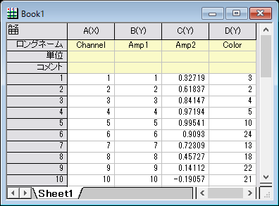

一致条件
Match-Modifiers-by
値の列に属性をリンクして、プロットの属性を変更します。作図してから、「作図の詳細」で列を変更して、プロット属性の関連付けをコントロールします。
データセットを使ってプロットを変更する方法についての詳細は、
作図の詳細の一致条件（テンプレートとフォーマットのコピー）オプションで、（インデックスオフセット、ショートネーム、ロングネーム、単位、コメント、(組込) パラメータ、ユーザ定義パラメータで）、プロットを変更する方法を指定します。この一致条件の設定は、グラフテンプレートに保存したり、関連するするスタイル形式のコピーしたりすることができます。
事前に保存したテンプレートからグラフを作成したり、フォーマットを貼り付けする場合、元のグラフの一致条件（テンプレートとフォーマットのコピー）によって、どのカラーマップやカラーインデックス列が目的のグラフに一致するのかを指定します。
Origin 2017以降、バッチ作図で、現在の処理の一致条件を類似オプションで指定できるようになりました。一致条件はデフォルトで作図の詳細の一致条件（テンプレートとフォーマットのコピー）の設定に準じます。
サンプル
カラーマップをコピーして、別のグラフに貼り付けます。
Amp1とAmp2の2つのデータ列と、Colorというカラーマップ用の1つの列があります。列Colorをカラーインデックスとして、列Amp1の散布図を作成して、カラーインデックスを Amp2の散布図に貼り付ける場合は次の通りです。

- 列Amplで散布図を作成してから、作図の詳細（プロット属性）ダイアログで、列Colorをカラーインデックスに設定します。
- 一致条件(テンプレートとフォーマットのコピー）ドロップダウンリストを設定して、グラフAmp1の作図の詳細（プロット属性）ダイアログのその他タブで、ロングネームとして設定すると、カラーフォーマットを別のグラフにコピーして貼り付ける場合に、カラーインデックスロングネームを使用することになります。
- このように、グラフAmp1のフォーマットをコピーして貼り付けて、グラフAmp2にカラーインデックスを、簡単に適用することができます。
指定した一致条件でバッチ処理
サンプルプロジェクト<Origin Program Folder>/Samples/Clone and Batch Plotting/Batch_Plotting.opjを開きます。
- フォルダーMulitple Columnsに、7つのワークシート（異なる色でマークされた3つのグループデータ）とカラーマップとサイズマップバブル付きの極座標グラフ(列Bから作成)があります。
- ここで、2つのMeasure Value列Dと列Fを使って、グラフをバッチ処理により作成します。グラフウィンドウのタイトルバーで右クリックして、メニューから複製（バッチ作図）を選択してバッチ作図ダイアログを開きます。次でバッチ作図ドロップダウンリストを列にして新しい列でバッチ作図を実行します。ダイアログに列を選択と表示され、4つのY列をリスト表示します。ここで、既存データプロットのY列は、このグラフのcol(B)としてここに表示されません。ただし、col(C)として列を修正できます。
- D列とF列を選択します。一致条件のチェックボックスにチェックを入れて、ドロップダウンメニューから<オフセット>を選択します。
- OK ボタンをクリックします。別の2つのグラフが作図されます。急ぐ場合は、OKをクリックするだけで簡単に作図できます。
- 「Graph3」をダブルクリックして、作図の詳細ダイアログを開くと、列Gと列Gに同じ列のオフセットが（元の不グラフと同様に）あることが確認できます。